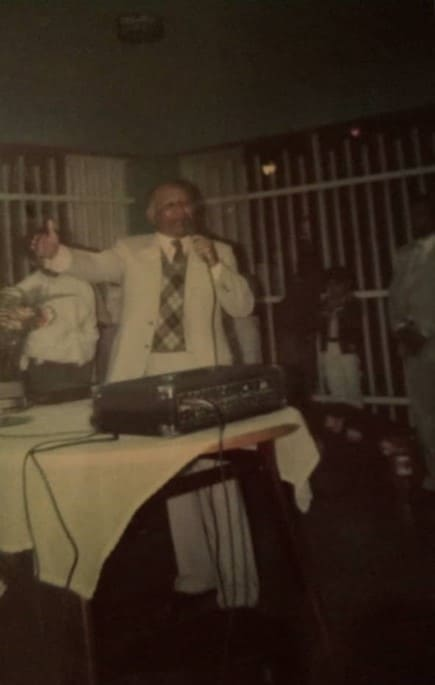

Das Werk von Mita kam 1982 nach Venezuela. In den 1950er Jahren sagte der Heilige Geist Gottes durch den Mund von Juanita García Peraza zu Aarón: „Lass uns nach Caracas gehen.“ Diese Prophezeiung wurde 1981 erfüllt, als die Venezolanerin Indalecia de Rivero nach Puerto Rico reiste. Während seines Aufenthalts auf der Insel nimmt er ein Taxi und sagt dem Fahrer, dass er in ein Restaurant gehen möchte, wo er gesund und lecker essen kann. Der Fahrer war José Reyes, ein Mitglied der Kongregation, und er fährt fort, sie zum Restaurant Duarte zu bringen, das sich in der Nähe des Mita-Tempels befindet.
Beim Mittagessen ertrank Indalecia infolge ihres Speiseröhrenkrebses. Die Brüder, die dort waren, informierten Aaron – der in der Nähe des Restaurants war – über die Situation, und er ging zu dem Ort und betete zu ihm. Indalecia konnte ihr Ertrinken überwinden und wurde – wie später bestätigt wurde – auch von diesem Krebs geheilt. Aarón nutzte die Gelegenheit, um mit ihr über Mitas Werk zu sprechen und lädt sie zu einem Gottesdienst ein. Er erzählt ihm, dass in Venezuela, in der Gegend von Catia La Mar, ein dominikanisches Ehepaar lebte, Calixta Cruceta und Manuel Rosario, die er kontaktieren könnte, um mehr über die Kongregation zu erfahren. Sie stimmt Aarons Einladung zu, kommt an diesem Abend zum Gottesdienst und konvertiert. Aarón schickte damit einen Brief an die Brüder Calixta und Manuel, in dem er sie fragte, ob es ihnen möglich sei, die Arbeiter (Pastoren) aus Puerto Rico in ihrem Haus zu empfangen, um in diesen Ländern zu predigen. Calixta und ihr Mann stimmen dieser schönen Bitte zu.
Monate später reist Frau Carmen Gómez, die in der Stadt Valencia lebte, mit Cecilia Mendoza und Otilia nach Puerto Rico. Sie nehmen ein Taxi und fragen den Fahrer nach Empfehlungen für Sehenswürdigkeiten und Kirchen, die sie besuchen könnten. Der Fahrer, der Mitglied der Mita-Gemeinde war, lädt sie zu einem Gottesdienst ein. In dieser Nacht hatten sie auch ihre Bekehrung. Cecilia Mendoza war so erstaunt, dass sie nach Puerto Rico zurückkehrte und Aarón sagte, dass sie wünschte, die Kirche könnte die Stadt Valencia in Venezuela erreichen.
Am 6. März 1982 schickte Aarón die ersten Arbeiter (Amador Laureano, Ismael Soto und Ángel „Noro“ Narváez) in venezolanische Länder. Sie gründen Gemeinden in Catia La Mar und in Caracas.
Im August 1982 kamen Aarón und eine Gruppe von Brüdern aus Puerto Rico zum ersten Mal nach Venezuela. Sie feiern drei Gottesdienste: auf dem Bolívar-Platz in Catia La Mar, in einem Versammlungsraum im Gebäude Nr. 56 in Caracas und in der Stadt Valencia in den Sektoren Los Guayos und Isabelica. Es gab viele bedürftige Menschen, die die Botschaft von Gottes Heiligem Geist durch den Mund Aarons annahmen.
Am 30. März 1989 weihte Aaron den Caracas-Tempel ein. Am 6. Februar 1990 schickte er die ersten Musikinstrumente nach Caracas, um eine Band zu gründen; ebenso schickt er Sarita Calderón, um Musikunterricht zu geben.

Es gibt Hunderte von Venezolanern, die das Werk von Mita angenommen haben und bezeugen, dass sie den Herrn empfangen haben.
Ende 1982 erkrankte Consuelo Mora Villamizar schwer an Gebärmutterkrebs. Eine Cousine namens Norma García erzählt ihr, dass es eine Kirche gibt, die aus Puerto Rico gekommen ist, wo große Wunder und Heilungen geschehen sind. Consuelo sah trotz vieler Zweifel ein Licht der Hoffnung und beschloss, diese Kirche zu besuchen. Der Arbeiter Ángel „Noro“ Narváez erklärt ihm die Botschaft der Obra de Mita, lädt ihn ein, an diesem Donnerstag beim Gottesdienst zu bleiben und drängt ihn, am Samstag dort zu sein, damit er mit Aarón telefonieren kann. An diesem Samstag hatten Consuelo und ihre beiden Söhne Omar und Julio Villamizar die Gelegenheit, telefonisch mit Aarón zu sprechen. Aaron wandte sich an Consuelo und sagte: «Sie werden von diesem Krebs geheilt» und fuhr fort, zu ihm zu beten. Das Wort des Propheten Gottes erfüllte sich und sowohl Consuelo als auch viele Mitglieder ihrer Familie schlossen sich der Kongregation an.